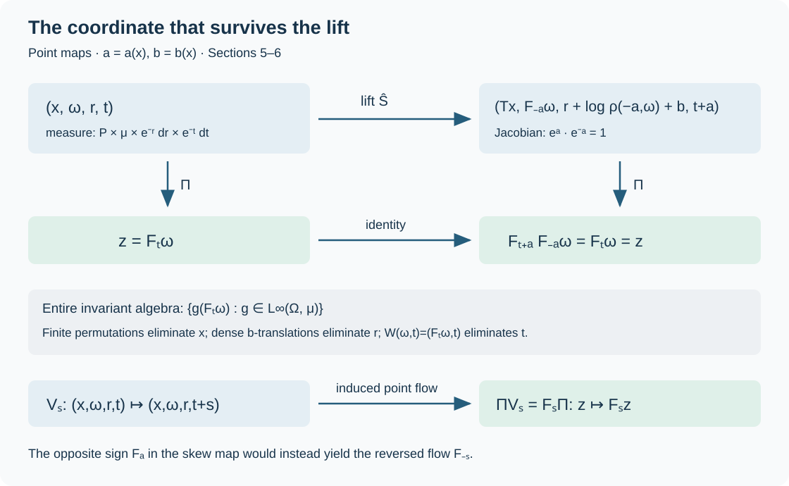

Odometer carries and realization of a measured flow
A prescribed ergodic flow can be recovered as the flow on the invariant algebra of a measure-preserving lift of one nonsingular transformation. We construct that transformation explicitly. Two independent families of odometer carries eliminate two auxiliary coordinates; the coordinate that survives is exactly the prescribed flow coordinate.
The scalar integration inputs are the explicit proofs of monotone convergence, the generating-set lemma, product measures, Tonelli–Fubini, finite-partition density and sigma-finite Borel Radon–Nikodym derivatives in Borel measure classes and derivative versions. That lesson reduces the last assertion to the finite derivative proof DC-05.
We use point actions: \(F_{s+t}=F_sF_t\). Their action on functions is \(g\mapsto g\circ F_{-s}\). If \(T\) is nonsingular, its forward Jacobian \(D_T\) means
\[ \mu(TE)=\int_E D_T(x)\,d\mu(x). \]Thus \(D_{TU}(x)=D_T(Ux)D_U(x)\). All spaces below are standard Borel, all measures are nonzero and sigma-finite, and assertions about bounded functions are modulo null sets. Our input is a jointly Borel nonsingular flow \(F\) on \((\Omega,\mu)\) that is ergodic and properly ergodic: no single orbit is conull.
1. Carry counts for all integer powers
Let \(X=\{0,1,2,3,4\}^{\mathbb N}\), with independent coordinates having probabilities \(w_j>0\), \(\sum_{j=0}^4w_j=1\). Write \(P\) for this product probability. The first coordinate is the least significant digit. Addition by one defines the base-five odometer \(T\): it replaces the initial string of \(4\)'s by \(0\)'s and increases the next digit by one.
One concrete construction of \(P\) starts with \([0,1)\) and recursively divides every half-open interval into five consecutive half-open intervals with relative lengths \(w_0,\ldots,w_4\). Reading the successive labels gives a Borel map to \(X\). The pushforward of Lebesgue probability gives every prefix cylinder the product of its digit probabilities; summing over unspecified intermediate digits proves independence for arbitrary finite coordinate sets. Cylinder measures determine the resulting Borel probability by the generating-set lemma of PF-37.
Remove the sequences eventually equal to \(0\) or eventually equal to \(4\), and denote the remaining space by \(X_*\). The removed set is countable, invariant under addition and subtraction and under finite coordinate permutations, and \(P\)-null. Indeed every point has probability at most \((\max_jw_j)^N\) for every \(N\). On \(X_*\), both carrying and borrowing terminate. They are inverse Borel operations.
For \(n\in\mathbb Z\) and \(i=1,\ldots,4\), define
\[ N_i(n,x)=\sum_{j\geq1} \left(\mathbf1_{\{x_j\geq i\}} -\mathbf1_{\{(T^nx)_j\geq i\}}\right). \tag{OFR.1} \]Only finitely many summands are nonzero. Subtracting and adding the middle threshold count proves, for positive, zero and negative integers alike,
\[ N_i(n+m,x)=N_i(n,T^mx)+N_i(m,x). \tag{OFR.2} \]The functions are Borel, since they are pointwise limits of their finite partial sums.
If the first non-\(4\) digit is at position \(j\), and is \(k\in\{0,1,2,3\}\), then
\[ N_i(1,x)=j-1-\mathbf1_{\{i=k+1\}}. \tag{OFR.3} \]Each reset \(4\to0\) contributes \(1\) to all four threshold counts. The increment \(k\to k+1\) contributes \(-1\) only at threshold \(k+1\).
The action is free. If \(T^nx=x\), reduction of the first \(L\) digits modulo \(5^L\) gives \(n=0\pmod {5^L}\) for every \(L\), whence \(n=0\). Its orbits are exactly tail-equivalence classes in \(X_*\). One inclusion follows from finite carrying. Conversely, if \(x,y\) agree past coordinate \(N\), let \(n\) be the integer represented by the first \(N\) digits of \(y\) minus that represented by those of \(x\). For every \(L\geq N\), addition by \(n\) gives the first \(L\) digits of \(y\), so \(T^nx=y\).
2. The Jacobian and the choice of logarithms
Put
\[ \beta_i=\frac{w_{i-1}}{w_i},\qquad \ell_i=\log\beta_i. \]Then \(w_k=w_0\exp(-\sum_{i\leq k}\ell_i)\). If an iterate replaces a finite prefix \(x_1,\ldots,x_L\) by \(y_1,\ldots,y_L\), its image-to-source cylinder ratio is
\[ \prod_{j=1}^L\frac{w_{y_j}}{w_{x_j}} =\exp\left(\sum_{i=1}^4\ell_iN_i(n,x)\right). \tag{OFR.4} \]For \(n=1\), partition into the countably many carry cylinders in Section 1. On each cylinder the tail is unchanged and the prefix is replaced bijectively. The ratio (OFR.4) therefore holds first for tail cylinders and then for every measurable subset of that cylinder, by uniqueness of finite measures on the sigma-field generated by cylinders. Summing over the partition proves the change-of-variables identity for every measurable set. Borrowing gives the same assertion for the inverse. The Jacobian chain rule and (OFR.2) now give
\[ D_{T^n}(x)=\prod_{i=1}^4\beta_i^{N_i(n,x)} \quad(n\in\mathbb Z). \tag{OFR.5} \]In particular the exponents themselves do not depend on the probabilities.
Choose positive \(\ell_1,\ldots,\ell_4\) so that
\[ A=\mathbb Z\ell_1+\mathbb Z\ell_2,\qquad B=\mathbb Z\ell_3+\mathbb Z\ell_4 \tag{OFR.6} \]are dense in \(\mathbb R\). Four rationally independent logarithms suffice, but are not necessary; for example \((1,\sqrt2,1,\sqrt2)\) suffices. To see density for an irrational ratio, the pigeonhole principle applied to \(0,\alpha,\ldots,N\alpha\) modulo \(1\) supplies nonzero elements of \(\mathbb Z+\alpha\mathbb Z\) arbitrarily close to zero. Integer multiples of such an element approximate any real number. Rescaling proves the claim for either pair.
Any chosen logarithms are realized by the positive probabilities
\[ w_j= \frac{\exp(-\sum_{i=1}^j\ell_i)} {\sum_{k=0}^4\exp(-\sum_{i=1}^k\ell_i)}. \tag{OFR.7} \]Define the signed additive cocycles
\[ \begin{aligned} a_n&=\ell_1N_1(n,\cdot)+\ell_2N_2(n,\cdot),\\ b_n&=\ell_3N_3(n,\cdot)+\ell_4N_4(n,\cdot),\\ a&=a_1,\qquad b=b_1. \end{aligned} \tag{OFR.8} \]Thus \(D_T=e^{a+b}\). On the four positive-measure cylinders \(x_1=k\), \(k=0,1,2,3\), the pairs \((a,b)\) are respectively
\[ (-\ell_1,0),\quad(-\ell_2,0),\quad (0,-\ell_3),\quad(0,-\ell_4). \tag{OFR.9} \]3. Permutations eliminate the Bernoulli coordinate
Let \(H\) be the countable group of finite coordinate permutations. For \(h\in H\), the sequences \(hx,x\) have the same tail and the same finite digit histogram. Section 1 gives a unique integer \(k(h,x)\) with \(hx=T^{k(h,x)}x\). This integer is Borel: its level sets are the disjoint Borel sets \(\{x:hx=T^nx\}\). Histogram equality gives
\[ N_i(k(h,x),x)=0,\qquad a_{k(h,x)}(x)=b_{k(h,x)}(x)=0. \tag{OFR.10} \]Negative values of \(k\) are included.
We need the following zero-one statement with its proof. Every bounded \(H\)-invariant function on \((X,P)\) is constant. To prove it, approximate such a function \(f\) in \(L^2(P)\) by a function \(q\) of finitely many initial coordinates, with \(\|f-q\|_2<\varepsilon\). These cylinder functions are dense: the \(L^2\)-closure of their span contains indicators of cylinders, is closed under bounded monotone limits of indicators, and hence contains the indicators in the sigma-field generated by cylinders.
Let \(\pi\) swap those initial coordinates with an equally long disjoint block. Since coordinates are independent and identically distributed, \(q\) and \(q\circ\pi\) are independent with the same law. Since \(f\circ\pi=f\) and \(\pi\) preserves \(P\),
\[ 2\|q-\mathbb E q\|_2^2 =\|q-q\circ\pi\|_2^2\leq4\varepsilon^2. \]Also \(|\mathbb E q-\mathbb E f|\leq\varepsilon\). Letting \(\varepsilon\to0\) gives \(f=\mathbb E f\).
Consequently, on \(X_*\times Z\), for any standard sigma-finite auxiliary space \((Z,\eta)\), a bounded measurable function invariant under every \(h\times1\) depends only on \(Z\). Countability of \(H\), Fubini's theorem on a countable finite-measure exhaustion of \(Z\), and the preceding proof give constancy of almost every \(X\)-section. The measurable function of \(Z\) is its integral over \(X\). This proves the product version, without a common exceptional set for uncountably many transformations.
4. Two measure-theoretic tools
For \(c\in\mathbb R\), let \(\rho(c,\omega)\) be the forward Jacobian of \(F_c\):
\[ \mu(F_cE)=\int_E\rho(c,\omega)\,d\mu(\omega). \tag{OFR.11} \]The Radon–Nikodym and change-of-variables results used for relation weights in 1. Counting arrows and fixing the derivative through 2. The weight model at infinite mass give positive finite representatives. We only need the countable subgroup \(A\). Choose Borel representatives for \(c\in A\), and remove the \(A\)-saturation of the union of their exceptional null sets. The chain rule then holds everywhere on the retained space, simultaneously for \(c,d\in A\):
\[ \rho(c+d,\omega)=\rho(c,F_d\omega)\rho(d,\omega), \qquad \rho(0,\omega)=1. \tag{OFR.12} \]This retained space need only be \(A\)-invariant. The original jointly Borel flow \(F_t\) on \(\Omega\) continues to be used for arbitrary real \(t\), with statements understood modulo null sets.
The map
\[ (\omega,r)\longmapsto (F_c\omega,r+\log\rho(c,\omega)) \tag{OFR.13} \]preserves \(d\mu(\omega)e^{-r}\,dr\). Indeed the image density acquires the factor \(\rho(c,\omega)\) from the first coordinate and \(e^{-\log\rho(c,\omega)}\) from the second. This argument is an identity of integrals of nonnegative functions, so it holds on the entire positive cone, including infinite values. Adding an additional constant \(d\) to the second coordinate instead scales this measure by \(e^{-d}\).
We also use dense-translation invariance. If a bounded measurable \(v\) on \(Z\times\mathbb R\) is invariant modulo null sets under translations in a countable dense subgroup \(D\subset\mathbb R\), then it depends only on \(Z\). For almost every \(z\), all the countably many invariances hold for \(v(z,\cdot)\). Translations are continuous in \(L^1\) on bounded intervals for locally integrable functions: approximate on a larger interval by finite linear combinations of interval indicators, whose translated symmetric differences have length tending to zero, and then pass through the \(L^1\) error. Thus invariance extends from \(D\) to every real translation. Convolving with a compactly supported continuous approximate identity gives a continuous translation-invariant function, hence a constant. The convolutions tend to \(v(z,\cdot)\) in \(L^1\) on every bounded interval; constants that converge on one interval converge to the same constant on all intervals. Integrating against a fixed probability density in the real coordinate gives a measurable choice of this constant. This also proves the assertion for measures equivalent to \(d\eta(z)\,dr\).
5. The nonsingular skew odometer
On
\[ Y=X_*\times\Omega\times\mathbb R,\qquad d\nu=dP(x)\,d\mu(\omega)e^{-r}\,dr, \]define
\[ S(x,\omega,r)= \left(Tx,F_{-a(x)}\omega, r+\log\rho(-a(x),\omega)+b(x)\right). \tag{OFR.14} \]Use the retained \(A\)-invariant conull subset from Section 4 in the second coordinate. On each carry cylinder, \(a,b\) are constants, so the map is Borel. Its inverse is obtained by \(x=T^{-1}x'\), then \(\omega=F_{a(x)}\omega'\), then subtracting the displayed shift from \(r'\). Equation (OFR.12) verifies this inverse and all signed iterates:
\[ S^n(x,\omega,r)= \left(T^nx,F_{-a_n(x)}\omega, r+\log\rho(-a_n(x),\omega)+b_n(x)\right). \tag{OFR.15} \]The product Jacobian on a carry cylinder is
\[ D_S(x,\omega,r) =e^{a(x)+b(x)}\rho(-a(x),\omega) e^{-\log\rho(-a(x),\omega)-b(x)} =e^{a(x)}. \tag{OFR.16} \]Summing over the countable partition proves this on all of \(Y\). In particular \(S\) is nonsingular, and it is free because its first coordinate is \(T\).
Its measure-preserving lift is
\[ \widehat S(x,\omega,r,t)= \left(S(x,\omega,r),t+a(x)\right),\qquad d\widehat\nu=d\nu\,e^{-t}\,dt. \tag{OFR.17} \]The two factors \(D_S=e^a\) and \(e^{-a}\) cancel. The vertical point flow
\[ V_s(x,\omega,r,t)=(x,\omega,r,t+s) \tag{OFR.18} \]commutes with \(\widehat S\) and scales \(\widehat\nu\) by \(e^{-s}\).
Equation (OFR.10), together with (OFR.15), shows that \(h\times1\times1\) belongs to the full group of \(S\), and that \(h\times1\times1\times1\) belongs to the full group of \(\widehat S\), for every \(h\in H\). Here the orbit exponent is the Borel integer \(k(h,x)\); every auxiliary-coordinate shift is zero.
6. The entire invariant algebra and its flow
We claim that
\[ L^\infty(Y\times\mathbb R,\widehat\nu)^{\widehat S} =\left\{g(F_t\omega):g\in L^\infty(\Omega,\mu)\right\}. \tag{OFR.19} \]Let \(f\) belong to the left side. Invariance under integer iterates, and hence under the piecewise iterates in the last paragraph of Section 5, holds modulo null sets; the integer partitions are countable. Section 3 therefore gives \(f(x,\omega,r,t)=h(\omega,r,t)\).
On the cylinders \(x_1=2\) and \(x_1=3\), (OFR.9) gives \(a=0\) and respectively \(b=-\ell_3,-\ell_4\). The invariance of \(f\), Fubini and the positive measure of these cylinders imply invariance of \(h\) under the corresponding translations of \(r\). The subgroup \(B\) is dense, so Section 4 gives \(h(\omega,r,t)=k(\omega,t)\).
The cylinders \(x_1=0,1\) now give
\[ k(F_{-c}\omega,t+c)=k(\omega,t)\quad(c\in A). \tag{OFR.20} \]Initially this holds for \(c=-\ell_1,-\ell_2\); inverses and compositions of the nonsingular maps give it for the generated countable group.
The Borel bijection
\[ W(\omega,t)=(F_t\omega,t),\qquad W^{-1}(z,t)=(F_{-t}z,t) \tag{OFR.21} \]preserves the measure class of \(\mu\otimes dt\). For a product-measure null set, Fubini makes almost every fixed-\(t\) section \(\mu\)-null, and nonsingularity of \(F_t\) preserves that nullity; applying the same argument to the inverse proves equivalence. Only a measure-class assertion is needed.
In these coordinates, the map \((\omega,t)\mapsto(F_{-c}\omega,t+c)\) becomes \((z,t)\mapsto(z,t+c)\). Thus (OFR.20) and dense-translation invariance for \(A\) imply
\[ k(F_{-t}z,t)=g(z) \]for some \(g\in L^\infty(\Omega,\mu)\). This proves one inclusion in (OFR.19). Conversely,
\[ F_{t+a(x)}F_{-a(x)}\omega=F_t\omega \tag{OFR.22} \]proves that every function on the right is \(\widehat S\)-invariant.
Define \(\Pi(x,\omega,r,t)=F_t\omega\). The pullback \(\Pi^*\) is a faithful, normal, onto isomorphism from \(L^\infty(\Omega,\mu)\) to the algebra in (OFR.19). Faithfulness and equality of essential-supremum norms follow from the measure-class bijection \(W\) and Fubini. Normality follows by pulling back bounded increasing suprema; the inverse is normal as well, since an order isomorphism preserves such suprema. Finally
\[ \Pi V_s=F_s\Pi,\qquad V_s^*(\Pi^*g):=(\Pi^*g)\circ V_{-s} =\Pi^*(g\circ F_{-s}). \tag{OFR.23} \]The flow on the entire invariant algebra is therefore the prescribed flow, with its specified direction of time.
This also proves that \(S\) is ergodic. If \(u\in L^\infty(Y,\nu)\) is \(S\)-invariant, regard it as a function independent of \(t\). It belongs to (OFR.19) and is fixed by every \(V_s\). Under the faithful isomorphism \(\Pi^*\), it corresponds to an \(F\)-invariant function, which is constant by ergodicity of \(F\). No assertion that a dense subgroup of \(F\) is already ergodic is needed.

Figure 1. The upper square displays the exact invariant coordinate \(\Pi=F_t\omega\); the lower row displays its equivariance under vertical translation. The two auxiliary coordinates disappear by the proved permutation and dense-translation arguments, not by choosing a representative of a lifted orbit. All arrows are point maps. Proof locators: Sections 5–6, equations (OFR.14)–(OFR.23). Construction context: Takesaki, Theory of Operator Algebras III, XVIII.2, Lemmas 2.3–2.4 and Theorem 2.5.
7. An AF principal relation and its factor
The principal relation \(R_S=\{(S^ny,y):n\in\mathbb Z\}\) is countable, free and ergodic. The space \(Y\) is nonatomic: its \(X\)-coordinate already has nonatomic product probability. Each countable orbit is null, so the relation is properly ergodic. Replace \(\nu\), if desired, by an equivalent probability, by assigning positive summable weights to a countable disjoint finite-measure exhaustion. This does not change the relation or its null sets.
The complete nonsingular tower and finite-exhaustion proof is 3. Towers and the correct cyclic boundary. Its hypotheses are exactly a properly ergodic nonsingular transformation of a standard probability space, as just verified. More explicitly, that proof supplies finite equivalence relations \(H_k\) so that each graph of \(S^j\), \(|j|\leq k\), misses \(H_k\) in source probability less than \(2^{-k}\). Put \(R_n=\bigcap_{k\geq n}H_k\). This is a finite Borel equivalence relation, since it is contained in \(H_n\), and the \(R_n\) increase. For each fixed \(j\), the source measure of its graph outside \(R_n\) is at most \(\sum_{k\geq n}2^{-k}\) once \(n\geq|j|\). Consequently its graph is contained in \(\bigcup_nR_n\) modulo a null set. Remove the union of these countably many exceptions and its \(S\)-saturation. On the resulting invariant conull space,
\[ R_S=\bigcup_nR_n. \tag{OFR.24} \]Thus \(R_S\) is approximately finite as a principal measured relation. If constant dyadic class sizes are part of the chosen AF convention, 4. The dyadic criterion and the whole measured model supplies the equivalent dyadic exhaustion with exactly the same relation.
Its relation algebra \(M(R_S,\nu)\) is an AFD factor with separable predual. The factor assertion follows from the center computation in 1. Whole operator fields and exact proof inputs: central fields are precisely invariant diagonal functions. For AFD, 4. The dyadic criterion and the whole measured model through 5. Scalar matrices and modular matrix fields constructs compatible finite scalar matrix algebras whose union generates the entire relation algebra. That theorem applies to this nonatomic ergodic AF relation; it includes approximation of the full diagonal and every presenting partial map. Separability follows from the standard sigma-finite regular Hilbert-space model. These are the required hypotheses of the factor assertion, not a replacement of the relation by a single finite corner.
The exact continuous-core theorem 1. The lifted relation and the exact core theorem lifts an arrow with forward derivative \(D\) by \(\lambda\mapsto\lambda/D\), and its point flow is \(\lambda\mapsto e^{-s}\lambda\). On writing \(\lambda=e^{-t}\), these are precisely \(t\mapsto t+\log D\) and \(t\mapsto t+s\). The measure \(d\nu\,d\lambda\) becomes \(d\nu\,e^{-t}dt\). Hence (OFR.17) is the full relation-core lift, and (OFR.19) is its full center. Equation (OFR.23) identifies the factor's flow of weights with \(F\).
For completeness, the type conclusion uses the earlier center criterion, ZDC Section 2. It proves that a separable factor with properly ergodic flow of weights is type \(\mathrm{III}_0\): the absence of an equivariant real translation coordinate first rules out semifiniteness, and freeness of the properly ergodic center flow then gives \(S(M)=\{0,1\}\). In its trace-scaling presentation this is equations (ZDC10)–(ZDC11); normal double duality and invariance of factor type under amplification transfer the conclusion to the original factor. Our center action has just been identified normally and equivariantly with the given properly ergodic \(F\), so all these hypotheses hold.
We have proved: every properly ergodic standard nonsingular flow is the associated flow of an ergodic AF principal relation, and the flow of weights of an AFD type \(\mathrm{III}_0\) factor with separable predual. This is an existence theorem. Comparing two arbitrary factors with the same flow requires the separate classification theorem.
8. Calculations with complete solutions
1. A carry with two resets. Suppose \(x=(4,4,2,x_4,\ldots)\). Compute \(N_i(1,x)\) and \(D_T(x)\).
The image begins \((0,0,3)\). Formula (OFR.3) gives \(N=(2,2,1,2)\), so \(D_T=\beta_1^2\beta_2^2\beta_3\beta_4^2\). Directly the prefix ratio is \(w_0^2w_3/(w_4^2w_2)\), the same number. This checks both the carry multiplicity and the sign of the increment.
2. A permutation is an orbit map with zero auxiliary shift. Swap any two coordinates and let \(n(x)\) be the integer taking \(x\) to that swapped sequence. Why does the skew iterate preserve \(\omega,r,t\)?
Each threshold has the same number of occurrences before and after the swap. Thus all four signed sums in (OFR.1) are zero, including when \(n(x)<0\). Equations (OFR.15) and (OFR.17), with \(\rho(0,\omega)=1\), show that the three auxiliary coordinates are unchanged. The map \(n(x)\) is Borel by the disjoint-graph argument in Section 3.
3. Check the time direction. Replace \(F_{-a}\) in (OFR.14) by \(F_a\), and use \(\rho(a,\omega)\) in the \(r\)-coordinate. What becomes of the invariant coordinate?
The Jacobian is still \(e^a\), so the lifted \(t\)-coordinate still increases by \(a\). Now the invariant coordinate is \(F_{-t}\omega\), since \(F_{-(t+a)}F_a\omega=F_{-t}\omega\). Vertical translation by \(s\) sends it to \(F_{-s}(F_{-t}\omega)\). This variant realizes the reversed flow \(s\mapsto F_{-s}\); the signs in (OFR.14) realize the specified \(F_s\).
4. Why is the coordinate change not declared unitary? The map \(W(\omega,t)=(F_t\omega,t)\) is nonsingular, but need not preserve \(\mu\otimes dt\). Does the invariant-algebra proof require preservation?
No. A nonsingular Borel bijection gives a normal isomorphism of the corresponding \(L^\infty\) algebras by composition. That is exactly what was used in Section 6. A unitary on \(L^2\) would additionally require the square root of the appropriate Radon–Nikodym density. No such unweighted \(L^2\) assertion enters the proof.
References
- M. Takesaki, Theory of Operator Algebras III (2003), XVIII.2, Lemmas 2.3–2.4, Theorem 2.5 and the existence assertion of Theorem 2.1. The lesson proves its carry identities and realization directly with the displayed Jacobian and point-flow conventions.
- Earlier programme proofs: relation weights and measure change, dyadic approximation and modular weights, relation factors, traces and corners, and relation cores and lifted symmetries. The type criterion is the ZDC proof linked in Section 7.